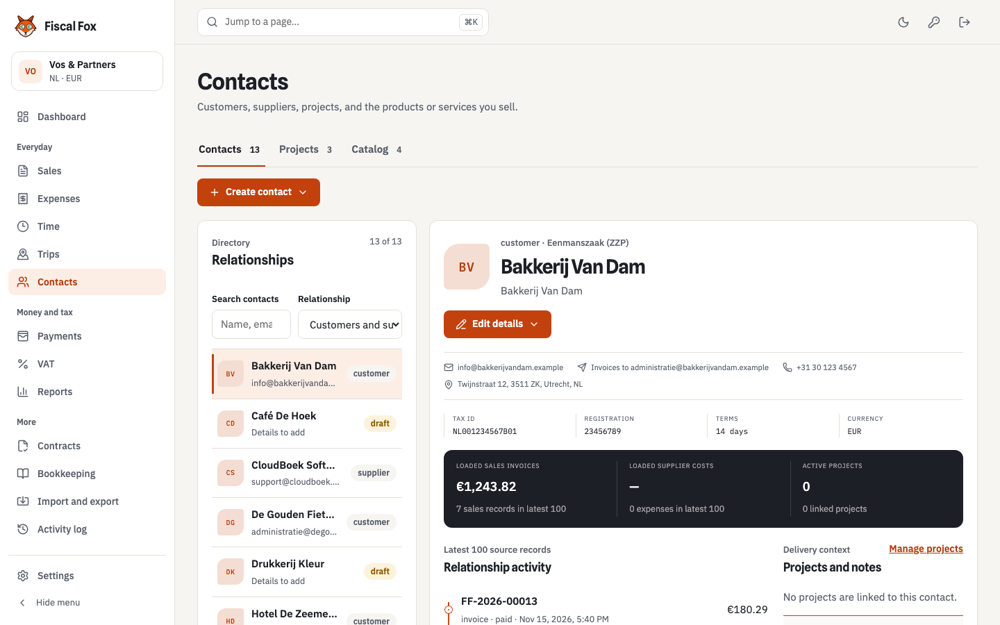
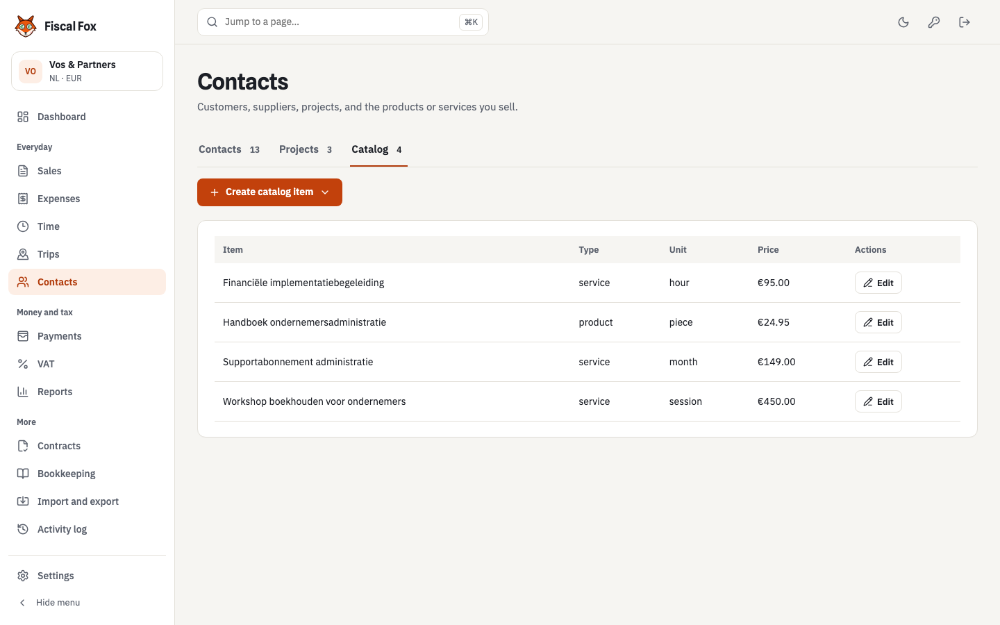

Contacts, projects, and catalog
Contacts holds your customers and suppliers, the projects you work on, and the products or services you sell. Use the tabs at the top to switch between Contacts, Projects, and Catalog.

Contacts
The directory on the left lists every contact. Search by name, email, phone, or tax ID, and filter by Relationship (customers, suppliers, or both). Select a contact to see its profile: contact details, tax and registration numbers, payment terms, currency, sales and cost totals, linked projects, and recent activity.
Add a contact
- Open Create contact.
- Choose the Type (customer, supplier, or both) and whether it is a person or a business. Businesses can record their Dutch Legal form (eenmanszaak, VOF, BV, stichting, and others).
- Fill in at least the Display name and Default currency. Add the email, phone, address, Tax ID, Registration ID (KvK), and Payment terms (days) as needed.
- Select Save contact.
- Invoice email receives invoices and payment reminders. Leave it blank to use the main email.
- Peppol scheme and Peppol endpoint ID are the customer's electronic address for e-invoices. Dutch businesses with an eight-digit KvK number and a Dutch address get one automatically. See Integrations for the supported schemes.
- A saved contact can widen from customer or supplier to both, but cannot switch from one to the other.
Draft contacts
When you type a name that does not exist yet in the customer or supplier picker on an invoice, a billable conversion, or a manual expense, the list offers Add "name". That saves a name-only draft contact and selects it, so you can keep working.
Draft contacts show Details to add in the directory. Open one and use Add details to complete it. You cannot finalize a quote, invoice, or credit note for a draft contact until its details are filled in.
Projects
A project groups work for one customer and carries an Hourly rate that time entries and invoices use.
- On the Projects tab, open Create project.
- Enter the Project name and, optionally, the Customer contact, a Code, and the Hourly rate.
- Select Save project.
Edit also lets you set start and end dates, the status (Active, Completed, or Archived), and notes. A new hourly rate applies to time logged and invoices created afterwards. Price history lists every rate change.
Catalog

The catalog holds the services and products you sell, so invoice lines can start from them.
- On the Catalog tab, open Create catalog item.
- Choose Service or Product, then enter the Name, Unit, and Unit price. Optionally add a SKU, Default VAT, Revenue account, and Description. Leave VAT or account empty to choose them on each invoice.
- Select Save item.
Editing an item changes new invoices only; existing documents keep their prices. Price history shows every change.
Note
Prices and rates have at most two decimals, and never more than the currency allows.